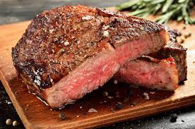

Steak

Description
Steak is a popular and flavorful cut of meat that is enjoyed by many around the world.
It is known for its rich taste and juicy texture, making it a favorite choice for special occasions and grilling enthusiasts.
A variety of cuts can be used for steak, including ribeye, filet mignon, New York strip, and sirloin.
The meat is typically seasoned with salt and pepper or a marinade to enhance its natural flavors.
Steak can be cooked using various methods, such as grilling, pan-searing, or broiling, depending on personal preference and desired doneness.
It is often served with side dishes like roasted vegetables, mashed potatoes, or salad, making it a satisfying and delicious meal.
Ingredients
- Steak (ribeye, filet mignon, New York strip, sirloin, etc.)
- Salt
- Pepper
- Optional marinade or seasoning blend
- Side dishes of your choice (e.g., roasted vegetables, mashed potatoes, salad)
Steps
- Remove the steak from the refrigerator and let it come to room temperature for about 30 minutes.
- Preheat your grill, skillet, or broiler to high heat.
- Season the steak generously with salt and pepper on both sides. Optionally, apply a marinade or seasoning blend of your choice.
- Place the steak on the hot grill, skillet, or broiler and cook for 3-4 minutes per side for medium-rare, or adjust cooking time according to desired doneness.
- Use tongs to flip the steak halfway through cooking.
- Remove the steak from the heat and let it rest for 5-10 minutes on a cutting board to allow the juices to redistribute.
- Slice the steak against the grain and serve hot with your favorite side dishes.
- Enjoy your perfectly cooked steak!